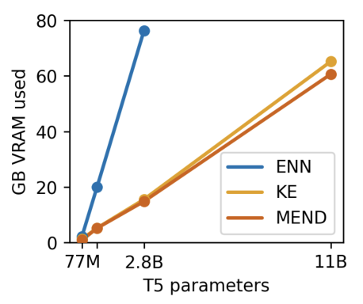
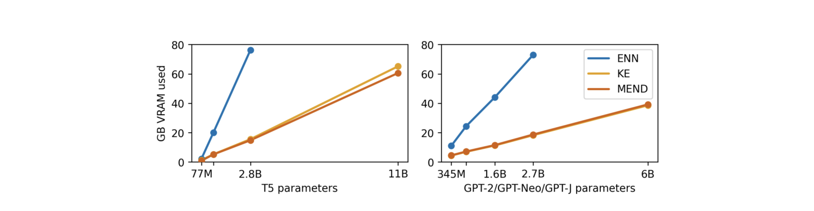
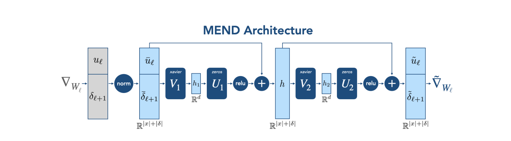

模型编辑的四条判据与两个指标
大模型会错，错了的还会过时（2019 年训练的模型答"英国首相"给 Theresa May）。全量重训不现实，于是需要模型编辑：给定一对样本 $(x_e, y_e)$（"英国首相是谁？"/"Boris Johnson"），改动参数使模型答对 $x_e$、答对它的同义改写、且不影响无关输入。论文把合格编辑拆成四条判据，并给出可测指标：
式 (1)：编辑成功率 ES（逐字核对）
$$\mathrm{ES} = \mathbb{E}_{x'_e,y'_e \sim \mathcal{N}(x_e,y_e)\,\cup\,\{(x_e,y_e)\}}\ \mathbb{1}\big\{\arg\max_y\ p_{\theta_e}(y|x'_e) = y'_e\big\}$$$\mathcal{N}(x_e,y_e)$：等价邻域——编辑后模型应当泛化到的样本集（如 "Who is the UK PM?"）。局部性用编辑前后模型在 $x_{loc}$ 上的 KL 散度度量。
命名澄清（重要）：文件名"Fast Model Editing at Scale"常被与 MEMIT（Mass-Editing Memory in a Transformer, Meng et al. 2023）混淆——这是两篇不同的论文、两条不同的技术路线。本文是 MEND（Model Editor Networks with Gradient Decomposition, Mitchell et al., ICLR 2022）：学习一个编辑器网络来变换微调梯度；MEMIT 属于后来的 locate-then-edit 闭式解路线（不训练编辑器，直接解出权重更新），谱系对照见第 10 章。
三条旧路的失败模式
2022 年之前的编辑方案分三类，各自死法不同：
- 微调（FT）：单样本微调过拟合——局部性与泛化双输。加 KL 约束（FT+KL，"oracle"基线：测试时可访问训练集来算 KL）能救局部性（GPT-Neo 的困惑度退化 0.195→0.026），但编辑成功率反降（0.55→0.40）——约束压住了泛化所需的参数移动。
- ENN（Editable Neural Networks, ICLR 2020）：MAML 式双层优化，把"可编辑性"烧进模型参数本身（内在可编辑）。致命伤是显存：训练时要保留原模型副本约束局部性、要为全模型算激活与梯度——Figure 3 实测 T5-2.8B 上 ENN 需要 ~77GB（MEND/KE 仅 ~15GB），11B 直接不可跑。
- KE（KnowledgeEditor, EMNLP 2021）：RNN 超网络吃编辑样本、输出梯度上的 rank-1 掩码与偏移（$\theta' = \theta - \alpha(m \odot \nabla W) + b$）——外在可编辑、显存友好，但在大模型上整体失效（编辑成功率 0.00-0.04）。


内在可编辑 vs 外在可编辑：一个谱系的原点
ENN 把编辑能力编码进模型参数（intrinsic），MEND/KE 用独立于模型的参数提供编辑能力（extrinsic）。这个区分决定了三件事：①能否保证编辑前后模型一致（ENN 不能——它改了基座，必须留原模型副本做约束；MEND 冻结基座）；②训练成本（ENN 要算全模型梯度；MEND 只算被编辑层的）；③能否复用（外在编辑器理论上可服务多个基座，内在的必须每个模型重训）。后来的编辑文献基本全走了外在路线。
梯度是 rank-1 的：把 O(d²) 映射压成 O(d)→O(d)
直接参数化"梯度→参数更新"的映射不可行：单个 $d\times d$ 权重矩阵的梯度有 $d^2$ 个分量（$d\approx 10^4$ 时即 $10^8$），即使 $g$ 取秩-$r$ 线形也要 $r(d^2+2d)$ 参数。MEND 的全部杠杆是一条线性代数事实：
引理（附录 D 证明链）：单样本 MLP 梯度是 rank-1 外积
$$\frac{\partial L}{\partial W^{ij}_\ell} = \delta^{i}_{\ell+1}\, u^j_\ell \quad\Longleftrightarrow\quad \nabla_{W_\ell} L = \delta^{\ell+1}\, u_\ell^\top$$$u_\ell$：第 $\ell$ 层的输入（激活）；$\delta^{\ell+1}$：损失对第 $\ell+1$ 层预激活的梯度（标准反传的副产品）。证明一步：$\partial z^k_{\ell+1}/\partial W^{ij}_\ell = 0\ (k \neq i)$，链式法则只剩一项。batch/序列元素各自独立变换后求和——这就是全部技巧的入口。
MEND 架构：恒等初始化的残差梯度变换器

式 (3a,b)：编辑器的前向（逐字核对）
$$h_\ell = z_\ell + \sigma\big(s^1_\ell \odot (U_1 V_1 z_\ell + b) + o^1_\ell\big),\qquad g(z_\ell) = h_\ell + \sigma\big(s^2_\ell \odot U_2 V_2 h_\ell + o^2_\ell\big)$$$z_\ell = \mathrm{concat}(u_\ell, \delta^{\ell+1})$；$\sigma$ = ReLU（保证 $\sigma(0)=0$，恒等初始化的前提）；$U_jV_j$ 是低秩分解——MEND 自身参数保持 $O(d)$；$s^j_\ell, o^j_\ell$ 是逐层的 FiLM 式缩放与偏移（FiLM：用外部参数对特征做逐维调制，给共享的编辑器一点逐层特化）。最终编辑：$\tilde W = W_\ell - \alpha_\ell \tilde\nabla W_\ell$，$\alpha_\ell$ 为可学习的逐层标量步长。
三个容易被当成"工程细节"、实则是命门的设计（§8 消融将证明）：
- 恒等初始化：$U_1, U_2$ 置零、$V_1, V_2$ Xavier——初始时 $g$ = 恒等函数，编辑从"原始微调梯度"这个已知的合理起点出发，而不是从随机变换出发；
- 输入归一化：$u_\ell$ 与 $\delta^{\ell+1}$ 的量纲相差几个数量级（病态条件），逐维归一化到零均值单位方差（统计在编辑训练集上算）——消融显示去掉它编辑成功率从 0.86 崩到 0.02；
- 按形状共享参数：每种权矩阵形状共享一套编辑器（MLP 两层 → 只需 2 套），FiLM 提供 per-layer 特化——省参数的代价极小（Table 6）。
"恒等初始化 + 残差"是一切学习型变换器的通用安全带
把 $g$ 初始化为恒等，等价于声明：未经训练的编辑器必须退化为普通微调——最坏情况就是已知的合理行为。这与 ResNet 的恒等残差、LoRA 的 B=0 初始化、D2L 的两阶段训练是同一个设计哲学：新能力从旧能力的恒等扰动中生长。消融给出的数字（去掉恒等初始化：Wikitext ES 0.86→0.27、训练慢 ~10×）量化了这条安全带的价值。
训练：两个损失、零高阶梯度
式 (4a,b) + 总损失（逐字核对）
$$L_e = -\log p_{\theta_{\tilde W}}(y'_e \mid x'_e),\qquad L_{loc} = \mathrm{KL}\big(p_{\theta_W}(\cdot|x_{loc})\ \|\ p_{\theta_{\tilde W}}(\cdot|x_{loc})\big)$$ $$L_{\mathrm{MEND}} = c_e L_e(\theta_{\tilde W}) + L_{loc}(\theta_W, \theta_{\tilde W}),\qquad c_e = 0.1$$$L_e$ 在等价邻域样本 $(x'_e,y'_e)$ 上算（不是编辑样本本身）——直接优化泛化；$L_{loc}$ 在独立采样的无关输入上算编辑前后分布的 KL。Adam 优化编辑器参数 $\phi$。没有高阶梯度：预编辑参数 $\theta$ 不被优化，$\tilde W$ 对 $\phi$ 的梯度是一阶的。
编辑的应用过程（Alg 2）同样是一阶的：一次前向缓存各层输入 $u_\ell$ → 一次反传得到 $\delta^{\ell+1}$ → 编辑器变换出 $(\tilde u, \tilde\delta)$ → 逐层外积得 $\tilde\nabla W$。编辑只作用于最后 2 个 encoder+decoder 块的 MLP（T5/BART，8 个矩阵）或最后 3 块的 MLP（GPT/BERT，6 个矩阵）——附录 E 消融显示编辑注意力层一致更差（GPT-J 上 ES 0.54 vs 0.88），与 Geva et al. 2021 的"FFN 是键值记忆"结论互证。
大模型：唯一能编辑 10B+ 的方案
| 编辑器 | GPT-Neo (2.7B) Wikitext | GPT-J (6B) Wikitext | T5-XL (2.8B) zsRE | T5-XXL (11B) zsRE | ||||
|---|---|---|---|---|---|---|---|---|
| ES ↑ | ppl.DD ↓ | ES ↑ | ppl.DD ↓ | ES ↑ | acc.DD ↓ | ES ↑ | acc.DD ↓ | |
| FT | 0.55 | 0.195 | 0.80 | 0.125 | 0.58 | <0.001 | 0.87 | <0.001 |
| FT+KL | 0.40 | 0.026 | 0.36 | 0.109 | 0.55 | <0.001 | 0.85 | <0.001 |
| KE | 0.00 | 0.137 | 0.01 | 0.068 | 0.03 | <0.001 | 0.04 | <0.001 |
| MEND | 0.81 | 0.057 | 0.88 | 0.031 | 0.88 | 0.001 | 0.89 | <0.001 |
三个读数：① KE 在大模型上整体崩溃（0.00-0.04）——论文的假说是 rank-1 掩码的信息容量不足以承载 10-token 的编辑标签（F3：未做隔离实验）；② FT+KL 的局部性-成功率跷跷板：KL 约束救 DD 但压 ES；③ MEND 的 4 个 ES 列全部最优（DD 列中 T5 两列由 FT 持有），且超参跨所有模型与数据集完全一致。一个必须标注的脚注（F1）：T5 系的 DD 低得反常，论文自己解释——这些 T5 可能未在 NQ 上完全收敛，编辑实际充当了"任务规格说明"，11B 头条的局部性度量因此偏松。
小模型与批量编辑：真实负载下的分野
小模型上（BERT-base/BART-base/distilGPT-2）ENN 与 MEND 打平（ENN 在 Wikitext 上 0.93 > 0.86 反超）——算力不是约束时，内在可编辑的额外收益才显现。分野出现在三个真实负载上：
第二条分野是部署约束：ENN 改了基座，编辑前后模型不一致，必须保留原模型副本；MEND 基座冻结，编辑即插即用。第三条是缓存式编辑（附录 G 的朴素基线：缓存编辑样本的末层隐状态、按相似度阈值直接输出编辑标签）——在 zsRE/FEVER 上很强（>0.99/0.96），在 Wikitext 上彻底失效（ES 0.001），且阈值敏感（DD 在 0.037-2.770 间震荡）：长上下文、含干扰信息的编辑没法用"隐状态相近"来判定。
消融：谁是命门，谁能通往 100B
| MEND 变体（distilGPT-2 Wikitext / BART zsRE） | 编辑器参数 | ES ↑ | ppl.DD ↓ | ES ↑ | acc.DD ↓ |
|---|---|---|---|---|---|
| No sharing（不共享参数） | O((m+n)²N) | 0.86 | 0.195 | >0.99 | 0.001 |
| No norm（去输入归一化） | O((m+n)²) | 0.02 | 0.370 | 0.97 | <0.001 |
| No ID init（去恒等初始化） | O((m+n)²) | 0.27 | 0.898 | 0.94 | <0.001 |
| Only u（只输出伪激活） | O(m²) | 0.63 | 0.559 | 0.98 | 0.002 |
| Only δ（只输出伪增量） | O(n²) | 0.80 | 0.445 | 0.99 | 0.001 |
| Only smaller（只输出较小者） | O(min(m,n)²) | 0.80 | 0.593 | 0.98 | 0.002 |
| MEND 完整版 | O((m+n)²) | 0.86 | 0.225 | >0.99 | 0.001 |
三个读数：①归一化与恒等初始化是命门——去掉任何一个，Wikitext 上编辑崩溃（0.02 / 0.27），训练慢 ~10×；这两个"实现细节"才是方法的活性成分。②参数共享几乎免费（0.86 持平）。③only-smaller 变体最有前景：只输出 $u$ 与 $\delta$ 中维度较小的那个（$O(\min(m,n)^2)$ 参数），性能仍具竞争力——当模型大到 $m+n \to 10^5$ 而 $\min(m,n) \approx 10^4$ 时，这个变体的参数量仍可控，论文据此断言 MEND 有通往 100B+ 的路。
消融表的信息结构：两个"稳定器"与一个"缩放许可"
No norm（0.02）与 No ID init（0.27）的崩溃模式不同：前者是优化失败（病态输入使训练慢 10×、学不出有用变换），后者是先验丢失（编辑器从随机变换起步，训练目标里没有"梯度本是好起点"的先验）。而 only-smaller 的存活回答的是另一个问题——容量下限：编辑一个错误所需的信息量，可能远小于 $m+n$ 的全宽。三条结论合起来是一条缩放路线图：先固定稳定器，再砍宽度。（注："优化失败 vs 先验丢失"的二分是我们的解读——论文只报告两者都掉点且训练慢 ~10×。）
批判评估：八条带证据的保留意见
T5 头条结果的局部性度量偏软
证据：Table 3 脚注——"T5 的低 drawdown 可能因为模型未在 NQ 上完全收敛，编辑实际充当任务规格说明"。影响：11B 的 0.89/<0.001 是最抢眼的数字，但其 DD 被基座欠拟合稀释；与 GPT 系（真生成任务）的 0.057/0.031 不可直接类比。
"Scales to 10B" 是环境相对的 claim
证据：Table 1 该列定义为"我们的实现能在我们的单卡环境跑"（A40/RTX Titan，bfloat16×2 估算 11B 显存）。影响：不是架构上限的证明，是工程配置的陈述；换环境结论要重算。
KE 失败的归因是无实验的假说
证据：论文明确写 "We hypothesize"——rank-1 掩码 + 不条件于梯度 = KE 在 Wikitext（10-token 标签、高信息量）失败的原因，但未做"给 KE 同样分解输入"的隔离实验。影响：KE 的失败可能部分来自实现/超参而非原理。
泛化口径跨数据集不一致
证据：zsRE/FEVER 用回译生成等价邻域，Wikitext 用前缀截断启发式（去掉最多一半前缀）。影响：三列 ES 的"泛化"强度不同——截断邻域与回译邻域的硬度论文未比较、不可直接互比；跨表比较 ES 时必须意识到口径差异。
批量编辑的局部性也在恶化
证据：Table 5——MEND 的 DD 从 k=1 的 0.002 涨到 k=125 的 0.012（6×）。推理：逐条 rank-1 编辑求和的秩随 k 线性涨，超出的容量以扰动无关输出的形式支付。影响：批量编辑不是免费的，k 的上限由 locality 预算决定。
locality 的 KL 是近似值
证据：seq2seq 的 KL 只在标签 token 上算、生成式按前缀逐 token 算；脚注 6 自认"不如用模型自身采样的蒙特卡洛估计有原则"。影响：L_loc 约束的是分布的一小片，过泛化失败（Table 10：编辑 Astra→Opel 后，F-150/Golf 也答 Opel）由此漏网。
命门被归档为"实现细节"
证据：正文 §3.2 将两者一笔带过（"Appendix A describes MEND's identity initialization and input normalization"）；消融（Table 6）显示它们是 ES 0.86→0.02/0.27 的决定性组件——尽管附录 A 给了专节，主文的定位仍是细节。影响：复现者若按"细节"跳过，方法直接失效。
ENN 对照的复现有偏差
证据：附录 C——ENN 复现用单步内环（原论文多步）、简化了编辑损失、允许内环学习率被外环学习。影响：ENN 的数字是"加强超参后的单步变体"而非原方法——加强变体下的结果整体可信，这也使 Table 5 中批量场景的崩溃更刺眼。
编辑方法谱系：MEND 的坐标与两条后续路线
把 MEND 读进本仓库的五容器谱系：它是容器②的"测试时修订机制"
本系列的五容器（ICL / 静态参数 / 生成参数 / 在线状态 / 测试时梯度）描述"知识放进哪"。模型编辑回答的是另一个正交问题：放错了怎么改。MEND 是容器②（静态参数）的修订机制——而且因为编辑器是外挂的，它可以同时服务容器③的产物（给 DnD/D2L 生成的 LoRA 打补丁，而非重生成）。MEND 是容器②的修订机制；因编辑器外挂，也可给容器③生成的 LoRA 打补丁（Q5）。
自主科研问题：五个可动手的方向
编辑秩预算 vs 编辑信息含量
KE（rank-1，固定）在 10-token 标签的 Wikitext 上崩溃，MEND（秩 ≈ 序列长度，10-100）存活——"编辑所需秩 ∝ 编辑的信息含量"是可形式化的容量定律。定义编辑的信息含量为标签的描述长度（token 数 × 平均 surprisal），预测：给定秩预算 $R$，ES 随信息含量单调衰减，阈值可测。
下手处：MEND 与 KE 在同一标签集上扫标签长度（1/5/10/50 token），画 ES-信息含量曲线；对照 D2L 的 rank-r·K 外推。零训练成本（用已训 checkpoint）。
等价邻域的硬度决定泛化的真假
论文 Limitations 自认：回译邻域测不出"由编辑内容蕴含的其他问题"（编辑 Boris Johnson 后，模型该答对"Is Boris Johnson a private citizen?"），且 overgeneralization（Astra→Opel 殃及 F-150/Golf）的失败模式由过弱的 locality 负样本漏网。
下手处：用 LLM 生成三层邻域（同义改写 / 蕴含推断 / 近义干扰），测 ES 与 overgeneralization 率随邻域硬度的变化；硬度本身可用困惑度增量量化——把"邻域构造"从数据工程升级为可调变量。
MEND 式编辑器 vs locate-then-edit：统一基准上的正面对决
MEND（学习编辑器、条件于梯度、O(d) 参数、即时编辑）与 ROME/MEMIT/AlphaEdit（因果追踪定位、闭式解、每编辑一次优化）已有对比（MEMIT 评测表含 MEND 基线），但协议与超参有争议；真正缺失的是控制"可学习编辑数据"这一 MEND 独有前提的统一对比。
下手处：统一到 MEMIT 的评测协议（CounterFact/zsRE + 一致性/泛化/选择性指标），控制"可学习编辑数据"这一 MEND 独有的前提，报告两者的 Pareto 前沿——混合方案（MEND 变换的梯度 + ROME 式目标层选择，见 Q5）留作上界探针。
长程编辑序列的干扰动力学
批量 DD 从 k=1 的 0.002 涨到 125 的 0.012。假说：求和的 rank-1 更新在权重空间发生叠加干涉（ echoing Hopfield 容量分析）。测：连续 10⁴ 条顺序编辑下 ES/DD 的衰减曲线；对照"按层分桶存储编辑、按查询路由应用"（caching 与 MEND 的杂交）。
下手处：编辑序列按主题分桶 vs 随机序列的 DD 对比——若分桶显著缓解，则编辑干扰是"内容冲突"而非"参数容量"问题，修复方案完全不同。
MEND 变换的梯度作为 TTT-E2E 的内环更新规则
TTT-E2E 的内环用朴素 SGD 更新 MLP（易梯度爆炸，靠 mini-batch 稳定）；MEND 恰好是一个"把朴素梯度变成更好更新"的学习算子，且梯度分解对任何 MLP 梯度适用。把 MEND 的 $g$ 插进 TTT-E2E 的内环（学一次，测试时每个 batch 用 $g(\nabla)$ 更新）。关键假设：$g$ 针对固定 $\theta$ 与固定归一化统计训练，而 TTT 内环中基座持续漂移——"学一次、反复用"隐含编辑器可迁移假设。这是 Schmidhuber"学习更新规则"谱系与 FWP 的直接交汇。
下手处：760M 玩具规模（TTT-E2E 附录 A 的配置）：对照朴素 SGD 内环 vs MEND 变换内环，测 Figure 6 式的逐 token 损失曲线是否整体下移；副产品：内环稳定性问题可能被 $g$ 的恒等初始化+归一化天然缓解。
小白 → 学者：十天路线图
第 1-2 天：编辑问题坐标系
读 ENN（ICLR 2020）与 KE（EMNLP 2021）——搞清 intrinsic/extrinsic 之分与四判据；亲手用 KE 官方代码跑一次 zsRE 编辑。
第 3-4 天： rank-1 引理与 MEND 全推
复推附录 D 证明（∂L/∂W_ij = δ_i u_j）；对照式 (2)(3) 手写 MEND 编辑器的前向（下面的代码 A/B 可直接验证）。
第 5-6 天：复现主结果
官方 repo（sites.google.com/view/mend-editing）在 distilGPT-2 + Wikitext 上复现 Table 4 的 0.86/0.225；重点检查归一化与恒等初始化（F7：命门）。
第 7-8 天：做一次消融或一个探针
重跑 Table 6 的 No-norm 行确认 0.02；或做 Q1 的 ES-信息含量曲线（用现成 checkpoint）。
第 9-10 天：对接后续文献
读 ROME/MEMIT/AlphaEdit，把三篇的评测协议列成对照表（Q3 的底稿）；写一页 proposal：你的编辑器改进在哪个判据上、付出什么代价。
A. rank-1 梯度引理验证（附录 D，经数值自检）
import torch
W = torch.randn(64, 32, requires_grad=True)
u = torch.randn(32) # 第 ℓ 层输入 u_ℓ [d_in]
loss = (W @ u).pow(2).sum() # 任意以 W@u 为输入的标量损失
grad = torch.autograd.grad(loss, W)[0] # ∇_W L [64, 32]
z = W @ u # 预激活 z_{ℓ+1} [64]
delta = torch.autograd.grad(z.pow(2).sum(), z)[0] # δ_{ℓ+1} = ∂L/∂z [64]
assert torch.allclose(grad, torch.outer(delta, u), atol=1e-6) # 引理成立 ✓B. MEND 编辑器块（式 3a,b：恒等初始化 + 低秩 + FiLM，经维度自检）
import torch, torch.nn as nn, torch.nn.functional as F
class MENDBlock(nn.Module):
def __init__(self, d, rank=16):
super().__init__()
self.U = nn.Parameter(torch.zeros(rank, d)) # 恒等初始化：U 置零
self.V = nn.Parameter(torch.empty(rank, d)); nn.init.xavier_uniform_(self.V)
self.b = nn.Parameter(torch.zeros(d)) # b、o 同置零 → 初始残差恒为零
self.s = nn.Parameter(torch.ones(d)) # FiLM：逐维缩放（式 3 的 s^j_ℓ）
self.o = nn.Parameter(torch.zeros(d)) # FiLM：逐维偏移（o^j_ℓ）
def forward(self, z): # z: [B, d] = concat(u, δ) 归一化后
return z + F.relu(self.s * (self.U.T @ (self.V @ z.T)).T + self.b + self.o) # 式(3a)
class MENDEditor(nn.Module): # 两个级联块（式 3a,b）
def __init__(self, d, rank=16):
super().__init__(); self.blk1 = MENDBlock(d, rank); self.blk2 = MENDBlock(d, rank)
def forward(self, z):
return self.blk2(self.blk1(z)) # 复合而非再相加：U=0,b=o=0 时 g(z)=z ✓C. EDIT 过程（Alg 2：缓存激活 → 变换 → 外积应用）
def edit(model, editor, x_e, y_e):
logits, cache = model.forward_with_cache(x_e) # 前向：缓存各层 u_ℓ 与输出 z_{ℓ+1}=W_ℓu_ℓ
loss = nll(logits, y_e)
deltas = torch.autograd.grad(loss, cache.outputs, retain_graph=True) # δ^{ℓ+1}=∂L/∂z（对输出！）
edited = {}
for ℓ, (u_l, d_l) in enumerate(zip(cache.inputs, deltas)):
z = torch.cat([norm(u_l), norm(d_l)]) # 式(3) 的 z_ℓ
out = editor[shape_id(ℓ)](z) # 共享编辑器（按形状）
u_t, d_t = out.chunk(2) # 拆回 ũ_ℓ 与 δ̃^{ℓ+1}
edited[ℓ] = model.W[ℓ] - model.alpha[ℓ] * torch.outer(d_t, u_t) # 式(2) + α_ℓ
return edited # 应用：W̃ = W − α·∇̃WD. 训练循环（Alg 1：L_e 在邻域上 + L_loc）
for step in range(500_000):
x_e, y_e, x_loc, x_e2, y_e2 = sample(edit_train) # Alg 1 第 3 行
edited = edit(model, editor, x_e, y_e) # Alg 2：得到 θ_{W̃}
L_e = -log_p(edited, x_e2, y_e2) # 式(4a)：在邻域上算
L_loc = kl_div(base_model(x_loc), edited(x_loc)) # 式(4b)：编辑前后 KL（近似）
(0.1 * L_e + L_loc).backward() # L_MEND，梯度只进 φ
opt.step() # Adam（仅编辑器参数）结语
一句话：MEND 证明了"模型编辑"可以被摊销——用 10⁵ 级（约 6.8 万对）的编辑数据集训练一个小编辑器，之后每次修正只需一对样本、一次前向；它的全部可扩展性来自一条代数事实（MLP 梯度 rank-1）和一条设计原则（恒等初始化让编辑器从"已知合理的微调"起步）。
谱系位置见第 10 章；未解难题 = 等价邻域太弱（F4/Q2）、批量局部性恶化（F5/Q4）、双刃剑伦理（伦理声明原话：编辑算法同样能编辑进后门）。